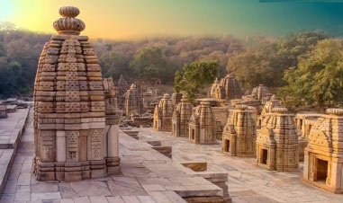
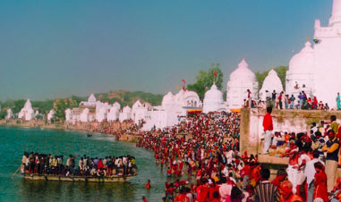
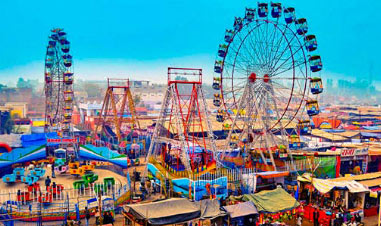
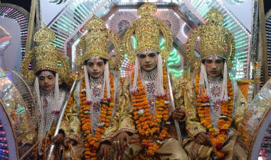
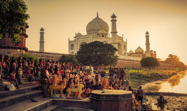
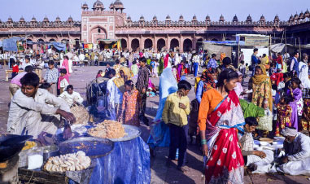

Eventos y Festividades de India
El mejor momento para viajar a la India es, sin duda, durante alguna de sus festividades. En este apartado te comentamos el significado y cómo se celebran en este hermoso y curioso país.
-
Feria Bateshwar - 2021
Feria Religiosa: 20 de diciembre 2021 - 30 de diciembre 2021
Bateshwar es un antiguo complejo de templos y un importante centro espiritual y cultural para los hindúes, se encuentra a una distancia de 70 km de la ciudad de Taj, Agra.
Consta de más de 100 templos dedicados al señor Shiva. Todos los templos están alineados a lo largo de la curva en forma de media luna de la orilla del río y varios tienen escalones que conducen al agua.
Una característica del templo son sus numerosas campanas de todos los tamaños, que junto con los cantos hipnóticos de los sacerdotes y devotos, así como con el incienso consiguen un santuario muy sonoro envuelto en un halo muy espiritual. -
Feria de Ganado - Bateshwar
Feria del Ganado: 29 de noviembre 2021- 10 de diciembre 2021
Cada año se celebra una gran feria de ganado en Bateshwar. Coincide con el período más auspicioso para rezar en Bateshwar y es un elemento importante para los santos, Sadhus, comerciantes y aldeanos por igual.
La feria atrae a un gran número de camellos, caballos, bueyes, elefantes, cabras, etc, así como a una multitud de comerciantes que venden de todo, desde utensilios de cocina tradicionales y especias hasta muebles, artesanías y cosméticos de fabricación local.
Esta feria tiene una duración de 3 semanas.
Es reconocida como la segunda feria de animales más grande del país -
Kailash Fair
Feria Religiosa: 20 de diciembre 2021 - 30 de diciembre 2021
Feria local que se realiza en Kailash a unas siete millas de Agra. Es una de las ferias más grandes del país. Cuenta la leyenda que Lord Shiva apareció en este lugar en forma de lingam de piedra, el símbolo fálico sagrado del dios.
La fiesta, celebrada con gran fervor por personas de todas las edades, es un evento espectacular con muchas actividades religiosas y otras celebraciones. No solo los templos sino también las calles están decoradas con papeles de colores. Numerosos puestos que venden juguetes, comida, joyas, etc. también se suman al ambiente festivo. -
Ram Barat
Celebración: 31 de octubre 2022 - 02 de noviembre 2022
Es parte de la celebración de Ramlilauna, una de las celebraciones más famosas del norte de la India. Esta celebración atrae a numerosos devotos y turistas a Agra y tiene lugar en los meses de octubre-noviembre.
Según la mitología hindú, la boda del dios Rama tuvo lugar este día. Cada año se elige una nueva localidad en Agra y se decora elaboradamente con luces, flores y mucha música. Esta festividad dura tres días donde el primer día se realiza la procesión nupcial.
Ram Barat significa literalmente "Barat (procesión matrimonial) de Shri Ram". El área recibe un importante lavado de cara como corresponde al lugar del matrimonio divino. -
Taj Mahotsav
Feria: 18 de febrero 2022 - 28 de febrero 2022
Esta feria carnaval de 10 días se celebra anualmente entre los días 18 y 28 de febrero en Shikpgram, a unos 750 metros de distancia del Taj Mahal en Agra.
Es uno de los festivales de arte, cultural y gastronómico más importante que se incluye en los eventos organizados por el departamento de turismo, GOI. En este festival participan alrededor de 400 artesanos de todo el país y venden sus productos a precios razonables.
Cada año, el Taj Mahotsav se celebra con un mensaje o tema para el mundo. En 2017, el tema de Taj Mahotsav fue "A la sombra de la herencia". En 2019, el último carnaval celebrado por pandemia, fue temática contra el SIDA. A través de esta temática se enfatiza todo el patrimonio de la zona que sirve de telón de fondo a la fiesta. -
Fatehpur Sikri
Feria: 24 de enero 2022 - 07 de febrero 2022
Esta feria se realiza durante el mes de Ramzan en la mezquita de Fatehpur Sikri. En el noroeste de India, en el distrito de Agra, a unos 35 km de esta capital, en el estado de Uttar Pradesh.
En el centro hay una pequeña y hermosa tumba de mármol blanco de Shaikh Salim Christi, que tiene tres hijos entre ellos Akbar quien construyó la ciudad de Fatehpur. Hasta el día de hoy esta tumba se considera un centro importante de veneración.
La ciudad fantasma de Fatehpur Sikri es uno de los más grandes atractivos turísticos del norte de India.
El entorno de la ciudad antigua es Patrimonio de la Humanidad por la UNESCO. Es todo un museo al aire libre y una visita muy recomendable; una parada perfecta para disfrutar de los trayectos entre Jaipur y Agra.